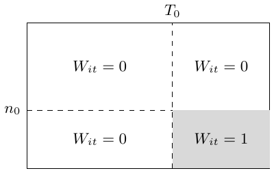

第 8 讲：面板数据方法
面板（纵向）数据在时刻 \(t=1,\ldots,T\) 观测单位 \(i=1,\ldots,n\)。把观测排成矩阵：各行对应单位，各列对应时间点 \(t_1,t_2,\ldots,T\)。 \[\begin{array}{c|cccc} &t=t_1&t=t_2&\cdots&t=T\\\hline i=1&&&&\\i=2&&&&\\\vdots&&&&\\i=n&&&& \end{array}\]
常数处理效应模型
结果为 \(Y_{it}\in\mathbb R\)，处理分配为 \(W_{it}\in\{0,1\}\)。基本模型是 \[Y_{it}=Y_{it}(0)+W_{it}\tau,\qquad i=1,\ldots,n,\quad t=1,\ldots,T. \tag{ 8.1}\] 这个非常基础的模型没有考虑处理效应异质性及动态效应。这里，所有单位、所有时点的处理效应相同；单位在 \(t\) 时点的结果只依赖该时点的处理，不依赖之前的处理。\(\tau\) 不依赖 \(i,t\)；过去的时点不进入模型。
双向模型
\[Y_{it}=\alpha_i+\beta_t+W_{it}\tau+\varepsilon_{it}, \qquad E[\varepsilon\mid\alpha,\beta,W]=0. \tag{ 8.2}\] \(\alpha_i\)、\(\beta_t\) 分别为单位和时间的平移。严格外生性条件于完整处理路径及固定效应：决策不能响应任一时期的个体噪声。这比同时期的均值外生性更强。
例如有两个时期，一组的处理路径为 \((0,0)\)，另一组为 \((0,1)\)。双重差分的闭式估计为
DID \(\textcolor{blue}{\longrightarrow}\) 两组各自的前后差，再做组间差。
\[\widehat\tau=\frac1{|\{i:W_{i2}=1\}|}\sum_{W_{i2}=1}(Y_{i2}-Y_{i1}) -\frac1{|\{i:W_{i2}=0\}|}\sum_{W_{i2}=0}(Y_{i2}-Y_{i1}).\]
理解。
局限是：当 \(n,T\) 很大且处理分配分布一般时，模型 (8.2) 可能不成立。类似地，多于两个时期的 OLS 有时也称为 DID，但一般 OLS 系数不再由两组前后差的简单式子描述。其优点是平行趋势要求比较直观（单位只在 \(\alpha_i\) 上存在差异）；没有平行趋势就不能使用。 在平衡面板中，对单位和时间指标残差化：\(\widetilde W_{it}=W_{it}-\overline W_{i\cdot}-\overline W_{\cdot t}+\overline W_{\cdot\cdot}\)，\(Y\) 同理。若 \(\sum_{it}\widetilde W_{it}^2>0\)，\[\widehat\tau=\frac{\sum_{it}\widetilde W_{it}\widetilde Y_{it}}{\sum_{it}\widetilde W_{it}^2}.\] 这里平行趋势指条件均值路径，而非带噪声的实际结果。
补充：噪声建模与方差估计。
将各行向量 \(\varepsilon_i=(\varepsilon_{i1},\ldots,\varepsilon_{iT})\) 视为在单位之间独立同分布，并有 \(\operatorname{Var}[\varepsilon_i]=\Sigma\)。假设每个 \(\varepsilon_{it}\) 都相互独立，很难论证，也不合理。\(T=2\) 时，直接估计差分的方差： \[\widehat{\operatorname{Var}}[\widehat\tau] =\frac{\widehat{\operatorname{Var}}[Y_{i2}-Y_{i1}\mid W_{i2}=1]}{|\{i:W_{i2}=1\}|} +\frac{\widehat{\operatorname{Var}}[Y_{i2}-Y_{i1}\mid W_{i2}=0]}{|\{i:W_{i2}=0\}|}. \tag{ 8.4}\] 同一行／单位内的误差相关时，该方法仍稳健。
交互效应面板模型
考虑交互效应面板模型 \[Y_{it}=A_{i\cdot}B_{t\cdot}^{\mathsf T}+W_{it}\tau+\varepsilon_{it}, \qquad\mathbb E[\varepsilon\mid A,B,W]=0,\tag{8.5}\] 其中 \(A\in\mathbb R^{n\times k}\)、\(B\in\mathbb R^{T\times k}\)，\(k\) 是秩参数。等价地， \[Y_{it}=L_{it}+W_{it}\tau+\varepsilon_{it} \qquad\text{对某个秩至多为 $k$ 的矩阵 }L.\]
我的矩阵直觉。
将 \(A\) 的取值沿行往下放，\(B\) 的取值沿列横向放。秩为一时，交点的元素就是 \(a_i b_t\)；若 \(k\ne1\)，则该元素是一个和 \(a_{i1}b_{t1}+a_{i2}b_{t2}+\cdots\)。

处理这个模型，可以考虑合成控制和合成双重差分。假设当且仅当 \(i>n_0\) 且 \(t>T_0\) 时，\(W_{it}=1\)。图中在第 \(n_0\) 行、第 \(T_0\) 列分割结果矩阵，只有右下角区块接受处理。

用未处理个体拟合处理组在处理前的轨迹： \[\sum_{i=1}^{n_0}\gamma_iY_{it} \approx\alpha+\frac1{n-n_0}\sum_{i=n_0+1}^nY_{it}, \qquad t=1,\ldots,T_0.\] 第一组从不接受处理；第二组在 \(T_0\) 之后接受处理。截距 \(\alpha\) 的作用类似于固定效应。权重选择为 \[\begin{aligned} (\widehat\gamma,\widehat\alpha)\in \operatorname*{arg\,min}_{\gamma',\alpha}\quad& \left\|\sum_{i=1}^{n_0}\gamma'_iY_{i,1:T_0} -\frac1{n-n_0}\sum_{i=n_0+1}^nY_{i,1:T_0} -\alpha\mathbf1\right\|_2^2,\\ \text{约束为}\quad&\sum_{i=1}^{n_0}\gamma'_i=1, \qquad\gamma'_i\ge0. \end{aligned} \tag{8.7}\] \(\gamma_i\) 的目的是创造平行趋势，从而平衡潜在的 \(A_i\) 项。
最后，在加权的双向模型中估计处理系数： \[(\widehat\tau,\widehat\alpha,\widehat\beta) \in\operatorname*{arg\,min}_{\tau',\alpha',\beta'} \sum_{i,t}\gamma_i (Y_{it}-\alpha'_i-\beta'_t-W_{it}\tau')^2,\tag{8.8}\] 其中，对 \(i>n_0\)，\(\gamma_i=1/(n-n_0)\)。
加权回归中处理个体的权重 \(\textcolor{red}{\longrightarrow}\) 对 \(i>n_0\)，\(\gamma_i=1/(n-n_0)\)。
处理系数的闭式解为 \[\begin{aligned} \widehat\tau={}&\frac1{n-n_0}\sum_{i=n_0+1}^n \left\{\frac1{T-T_0}\sum_{t=T_0+1}^TY_{it} -\frac1{T_0}\sum_{t=1}^{T_0}Y_{it}\right\}\\ &-\sum_{i=1}^{n_0}\gamma_i \left\{\frac1{T-T_0}\sum_{t=T_0+1}^TY_{it} -\frac1{T_0}\sum_{t=1}^{T_0}Y_{it}\right\}. \end{aligned}\] 这依赖 \(T_0\) 和 \(n\)。在适当的大面板渐近框架下，\(n_0,n_1,T\to\infty\) 时，估计量一致。 一致性要求处理前因子能够揭示处理后相关的方向，处理前信息足够，并控制噪声与权重集中。仅有良好的处理前拟合并不充分。完整合成 DID 还使用时间权重和正则化；这里的式子突出单位加权思路。
其他方法。
合成控制并非处理交互式固定效应的唯一方法。例如，通过 \(k\)-均值聚类矩阵 \(Y\) 的行，然后分别为每个群组拟合时变基线模型。
通过可交换性识别
回顾 \(Y_{it}=Y_{it}(0)+W_{it}\tau\)。一个基于设计的假设为 \[Y_{i\cdot}(0)\perp W_{i\cdot}\mid S_i, \qquad S_i=\sum_{t=1}^TW_{it}.\tag{8.10}\] 其一个推论：考虑线性估计量 \[\widehat\tau=\sum_{i,t}\gamma_{it}Y_{it},\tag{8.11}\] 权重矩阵只依赖 \(W\)。在 (8.10) 下，给定同一个 \(S_i\) 值，未处理潜在结果可交换，并且 \[\mathbb E[\widehat\tau\mid W,\gamma] =\sum_{i,t}\gamma_{it}\mathbb E[Y_{it}(0)\mid S_i] +\tau\sum_{i,t}\gamma_{it}W_{it}.\] 因此，只要满足下列条件，就可得无偏性： \[\sum_{i,t}\gamma_{it}W_{it}=1, \qquad \sum_{i:S_i=s}\gamma_{it}=0 \quad\text{对每个 }t\text{ 和 }s\in\mathcal S,\] 其中 \(\mathcal S\) 是 \(S_i\) 的支持集。
同一层内，条件期望为常数 \(\textcolor{red}{\longrightarrow}\) \(\sum_{i:S_i=s}\gamma_{it}=0\) 消去 \(\sum_i\gamma_{it}E[Y_{it}(0)\mid S_i]\)。
这里假设各行独立同分布，且条件均值共同为 \(E[Y_{it}(0)\mid S_i=s]=m_t(s)\)。准则 \(\sum_{it}\gamma_{it}^2\) 对应条件不相关且同方差的单元格；单位内协方差为 \(\Sigma_i\) 时使用 \(\sum_i\gamma_i^\mathsf T\Sigma_i\gamma_i\)。只要平衡约束可行，即使该工作方差模型错设，无偏性仍成立。
在这些无偏性约束下，选择使方差最小的 \(\gamma\)： \[\begin{aligned} \gamma\in\operatorname*{arg\,min}_{\gamma'}\quad&\sum_{i,t}(\gamma'_{it})^2,\\ \text{约束为}\quad&\sum_{i,t}\gamma'_{it}W_{it}=1, \quad\sum_{i:S_i=s}\gamma'_{it}=0\quad\text{对所有 }s,t. \end{aligned} \tag{8.14}\] 大致说，需要相同 \(S_i\) 的个体之间存在 \(W_{it}\) 的变异。
两组识别约束。
回顾双向模型 \[Y_{it}=\alpha_i+\beta_t+W_{it}\tau+\varepsilon_{it}, \qquad\mathbb E[\varepsilon\mid\alpha,\beta,W]=0.\tag{8.2，回顾}\] 在这个模型下，若满足下列条件，估计量 (8.11) 也无偏： \[\sum_t\gamma_{it}=0\ \text{对每个 }i, \qquad\sum_i\gamma_{it}=0\ \text{对每个 }t, \qquad\sum_{i,t}\gamma_{it}W_{it}=1.\] 前两个等式消去固定效应 \(\alpha_i\) 和 \(\beta_t\)，第三个等式将处理系数归一化。
合并这些约束可得到双重稳健估计量：最小化 \(\sum_{i,t}\gamma_{it}^2\)，约束为 \[\sum_{i,t}\gamma_{it}W_{it}=1, \qquad\sum_{i:S_i=s}\gamma_{it}=0\quad\text{对所有 }s,t,\] \[\sum_t\gamma_{it}=0\quad\text{对所有 }i, \qquad\sum_i\gamma_{it}=0\quad\text{对所有 }t.\] 只要 (8.2) 或 (8.10) 任一成立，它就无偏。